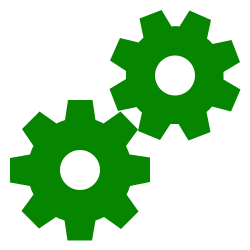

👋- Welkom!
Hey! Welkom bij deze Electron applicatie! Deze applicatie is gemaakt door mij, Berat Koç.
Op deze applicatie kan je een API testen en gebruiken die ik heb toegevoegd!
👀- Neem een kijkje!
Test en bekijk de API die ik heb toegevoegd bij deze applicatie!
In de toekomst zou ik meer API's kunnen toevoegen of een Electron applicatie ombouwen in een ander project!
Klik hier ->  om de API te
bekijken.
❓- Waarom?
Deze opdracht moest ik maken voor school, maar interesseerde mij wel heel erg! Vandaar dat ik dit heb gekozen
als project om te tonen.
Om meer te weten, klik hier ->